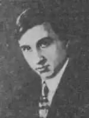
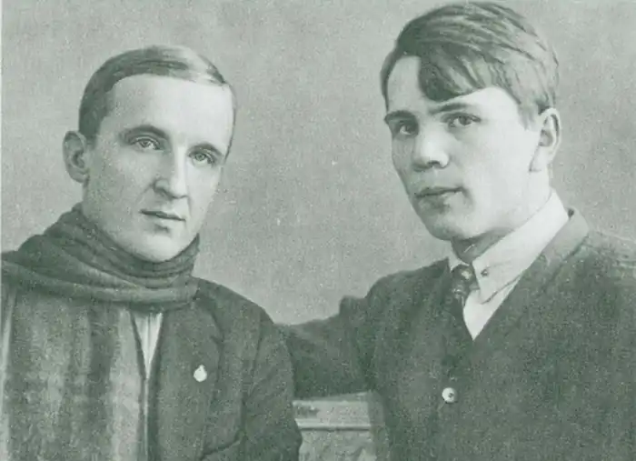

Білих Григорій Георгійович, 1906 року народження, уродженець Ленінграда, російська, громадянин СРСР, безпартійний, письменник (член Спілки радянських письменників), проживав: Ленінград, пр. Червоних командирів, д. 7, кв. 21
дружина — Грам Раїса Соломонівна
дочка — Миколаєва Тетяна Юхимівна 27 грудня 1935 року в зв'язку з обвинуваченням за ст. 58-10 КК РРФСР (антирадянська агітація і пропаганда) УНКВС по Ленінградській області була взята підписка про невиїзд. Вироком Спеціальної Колегії при Ленінградському обласному суді від 25 лютого 1936 року визначено 3 роки позбавлення волі. Ухвалою Спецколегія Верховного Суду України від 10 квітня 1936 вирок залишено в силі. Даних про дату, причини смерті та місце поховання Білих Г. Г. в справі немає, проте є свідчення письменника Л. Пантелєєва, з якого випливає, що Білих Г. Г. помер влітку 1938 року в Ленінграді в тюремній лікарні ім. Газа. Постановою Президії Верховного Суду України від 26 березня 1957 вирок Ленінградського обласного суду від 25 лютого 1936 року і визначення Спеціальної Колегії Верховного Суду України від 10 квітня 1936 року в відношенні Білих Г. Г. скасовані, і справу припинено за відсутністю в його діях складу злочину . Білих Г. Г. у даній справі реабілітований. Білих Григорій Георгійович (20 або 21.VIII. 1906 року, Петербург — 1938), прозаїк, дитячий письменник. Був безпритульним. Навчався в Школі соціально-індивідуального виховання ім. Ф. М. Достоєвського (ШКІД). Займався журналістикою в Ленінграді. Найбільш значний твір — "Республіка Шкид" — написано разом з іншим вихованцем цієї школи Л. Пантелєєвим. Неймовірний успіх, який випав на долю "Республіки Шкид", відразу зробив широко відомими імена двох молодих авторів — Гр. Білих і Л. Пантелєєва. Починаючи з 1927 року, книга перевидавалася щорічно, поки в 1937 році не була вилучена з ужитку — мало не на чверть століття. "Республіка Шкид" придбала колишню популярність, але ім'я одного з її авторів — Г. Бєлих майже невідомо широкому читачеві. Тільки зараз, коли з'явилася можливість познайомитися з його "справою" і отримати, ймовірно, далеко не повний матеріал, можна в якійсь мірі представити його життя, його долю, зрозуміти, чому обдарований і яскравий літератор так мало друкувався в 30-і роки ! Тільки зараз, знайомлячись з раніше невідомими фактами його біографії, можна переконатися, що він не тільки багато тоді розумів, але вже на багато і наважувався. Далеко не безневинними були ті матеріали, які родич вийняв з ящика його письмового столу з тим, щоб передати "за призначенням". Що зробив це чоловік сестри Білих, зробив через дрібних негараздів комунальної квартири, — це, здається за мірками людської моралі страшним, протиприродним, як раз було, з точки зору того часу, вчинком буденним і рядовим. "Довга черга до тюремного віконця на шпалерно була звичайним явищем в роки сталінського терору в Ленінграді. Але була тоді й інша, може бути, не менше довга черга в приймальні НКВД: там стояли ті, хто хотів звести рахунки з недругом, у що б то не стало запроторити за ґрати неугодного. В тому й полягала аморальність сталінщини, що вона використовувала в своїх цілях саме нице, найогидніше в людині "*. * Лунін Е. Як загинув Григорій Белих.— "Юридична газета", № 0, квітень, 1990 року. Майже все життя Григорія Георгійовича Білих (20 серпня 1906 року, Петербург — 14 листопад 1938 Ленінград) пройшла в будинку № 7 по Ізмайловському проспекті. Будинок був величезний. Всередині, на задвірках, знаходилося двоповерхова будова, яке прозвали "СМУРИГІН палацом". Задвірки ці були — сама гучна і найбільш населена частина всієї будівлі; їх охрестили "Будинком веселих жебраків". Тут і пройшло все дитинство Гриші Білих. Був він наймолодшим в сім'ї. Батько помер рано, головною годувальницею залишалася мати, Любов Никифорівна, прачка, прибиральниця (згодом працювала на "Червоному трикутнику"). Дитинство Гриші було схоже на дворове дитинство однолітків. Він рано опанував грамотою, але як тільки переконався, що його пізнань вистачає, щоб читати "сищиків" — "Ната Пінкертона" і "Боба Руланда", закинув школу і більше вчитися не захотів. Коли почалася війна, спочатку світова, потім громадянська, і життя сім'ї звалилася, він, як і сотні пітерських хлопців, став хлопцем вулиці. Його довгі пальці спритно обробляли кухоль з пожертвами у каплиці; разом з іншими хлопчаками він, обзавівшись санками, чергував біля вокзалів і перевозив важкі мішки за буханку хліба. У 1920 році в числі хлопців, зібраних з дитячих колоній, прямо з вулиці, з розподільників, з в'язниць, Гриша Білих виявився в щойно відкритому на місці старого комерційного училища (Старо-Петергофський проспект, нині пр. Газа, 19) закладі зі складним назвою: "Школа соціально-індивідуального виховання імені Достоєвського для важковиховуваних". Дотримуючись звичкою блатного світу, назва хлопці змінили, зробили його звичним для себе: вийшло ШКІД. Ім'я, по батькові та прізвище завідувача — Віктора Миколайовича Сороки-Росинського скоротили до Викниксора, а кожен вихованець отримав прізвисько. Влучний очей безпритульного виділяв характерні зовнішні ознаки, і ось уже чорнявий, з густою кучерявою шевелюрою Микола Громоносцев став Циганом, товстий і ледачий барон фон-Оффенбах — Купцем, субтильний, з трохи розкосими очима Еонін — Японцем, світловолосий, але з довгим похилим носом Гриша білих — Янкелем, за ними слідували не менше колоритні Горбушка, Воробей, Голий пан, Турка, Гужбан і так далі. В наші дні ім'я В. Н. Сороки-Росинського вже увійшло в історію вітчизняної педагогіки і зайняло належне місце в ряду видатних її діячів. Особливості школи, де займалися по десять годин на день, де прищеплювали інтерес до історії і літературі, де випускали свої газети і журнали, відчули на собі багато хлопців. Мало не на першому уроці "Янкель вперше відчув, що нарешті знайдено берег, знайдена тиха пристань, від якої він тепер не відчалить". Пристань була аж ніяк не тихою, і як раз найбільший авторитет належав Янкелю за безсумнівну майстерність бузи, хоча не менше цінувалися його видавничий і художницький талант. Теплу і любовну характеристику про Гриші Білих залишив у своїй незавершеній рукописи "Школа імені Достоєвського" В. Н. Сорока-Росинський, зазначивши, в першу чергу, його літературний хист: "Гр. Білих ще в бутність свою в школі мав настільки рідкісним серед наших письменників почуттям гумору. Його гумористичні статейки, що з'являлися в численних журналах школи, примушували від душі сміятися навіть тих, хто сам бував їх жертвою, навіть педагогів ". І далі: "Був Гр. Білих і дуже талановитим малювальником-карикатуристом і сам іноді ілюстрував свої статейки. Іноді його гумор переходив в уїдливу іронію, а карикатура — в шарж: заради красного слівця Білих не пощадила б і рідного батька, але при цьому мав почуття міри: він ніколи не грішив проти істини, міг шаржовані, але не вигадував небилиць. Він був справжнім реалістом ". До кінця третього року перебування в Шкиде почалася дружба, або, як це там називалося, "Слама" Білих з Ленькой Пантелєєвим (прізвисько це Олексій Єремєєв отримав на честь відомого грабіжника): ця "Слама" була особливою. Хлопців зв'язали любов до літератури, захоплення кінематографом, загальні плани, мрії. Уже в Шкиде вони намагалися створити щось своє, "шкідкіно", разом складали лихі романи. "Протягом цілого місяця, — згадує Л. Пантелєєв, — Гриша Білих і я випускали газету" День "в двох виданнях — денному і вечірньому — причому у вечірньому випуску друкувався день у день великий пригодницький роман" Ультус Фантомас за владу Рад "" . В кінці третього року для Гриші і другого для Олексія вони отримали дозвіл покинути Шкиду. Вони готувалися почати нове життя і почати її з подорожі в Баку, до режисера Перестиани, який знімав фільм "Червоні дьяволята"; сподівалися відразу ж вступити до нього на службу — режисерами або акторами. А поки, щоб зібрати грошей на дорогу, потроху почали друкуватися в гумористичному журналі "Бегемот", в "Зміні", в "Кінотиждень". Там одного разу Гриша Білих надрукував статтю "Нам потрібен Чарлі Чаплін", скромно запропонувавши на цей "пост" ... свою кандидатуру. На жаль, вони дісталися тільки до Харкова і замість лаврів кінодіячів з працею отримали одне тимчасове місце на двох — учня кіномеханіка. Незабутнім було інше: в 1925 році мати Гриші запропонувала Олексію жити у них: одна кімната була біля кухні, в квартирі на тому ж Ізмайловському, 7. Близько трьох років друзі провели тут разом. Сюди до молодих авторів приходили згодом С. Маршак, Е. Шварц, художник Л. Лебедєв, редактор веселих журналів "Їжак" і "Чиж" Микола Олейников. Тут бували і ночували багато шкидцев. В одному журнальному інтерв'ю Пантелєєв згадував, як одного разу морозним вечором 1926 року ці фірми з Грицем йшли в кінематограф "Асторія", і Гриша раптом несподівано сказав: "Давай писати книгу про Шкиде!" Майбутні літописці ШКІД нашкребли грошей, купили махорки, пшона, цукру, чаю і, зачинившись в Гришиной кімнаті, приступили до справи. У вузькій кімнаті з вікном, що виходить на задній двір, стояли два ліжка, між ними — невеликий стіл. Що потрібно було ще ?! Свого часу, працюючи над книгою про творчість Л. Пантелєєва, я запитала у Олексія Івановича, як саме вони писали вдвох? Відповідь виявилася дуже простим: був складений план на тридцять два сюжети, кожному дісталося порівну — по шістнадцять глав. Олексій Єремєєв потрапив в Шкиду приблизно на рік пізніше Гриші: перші десять глав, до глави "Льонька Пантелєєв", природно, припали на Білих: уважний читач цих десяти глав виділить і інші шість. Олексій Іванович підтвердив мої припущення щодо цих шести. Він охоче говорив, що своєму помітного успіху книга зобов'язана Гриші; саме перші глави сконцентрували найгарячіший, найнесподіваніше, конфліктне і вибуховий, що відрізняло існування такого некерованого організму, яким була в своєму початку Шкида. Саме десять перших глав вмістили то головне, що потім дозволило говорити про цю книгу, як про "преорігінальной, живий, веселою, моторошної" (М. Горький). У цих розділах позначилися і визначилися характери головних героїв, обрисувалася "монументальна" фігура мудрого, наївного, караючого і прощає шкидской президента Викниксора. На частку Білих припала, може бути, мало не трагічна історія в житті ШКІД, коли в ній з'явився маленький "павучок" Слаенов, обплутані боргами майже всіх хлопців і став в ній хлібним королем.